Kiến thức chọn máy, vận hành và tối ưu chi phí dây chuyền nghiền đá, cát nhân tạo do kỹ sư Thanh Long biên soạn.
36 bài mới nhất
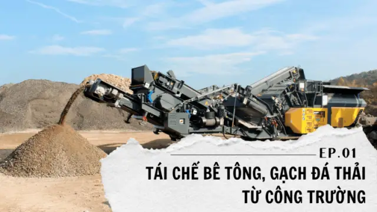
17Th6Tái chế bê tông, gạch đá thải từ công trường: Xu hướng tất yếu của ngành xây dựng hiện đại
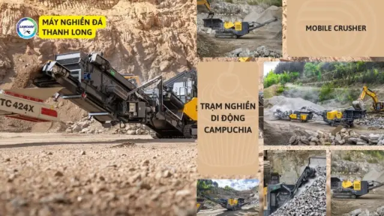
26Th5Máy di động nghiền VLXD tại khu công nghiệp – giải pháp tối ưu cho dự án
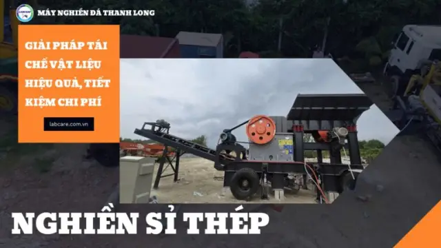
03Th3Giải Pháp Tái Chế Vật Liệu Hiệu Quả, Tiết Kiệm Chi Phí
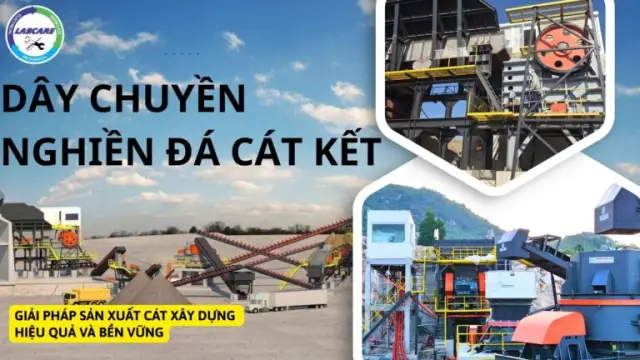
03Th2Dây chuyền nghiền đá cát kết – Giải pháp sản xuất cát xây dựng hiệu quả và bền vững
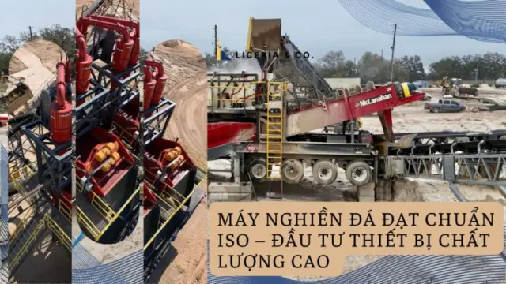
26Th11Máy nghiền đá đạt chuẩn ISO – Đầu tư thiết bị chất lượng cao
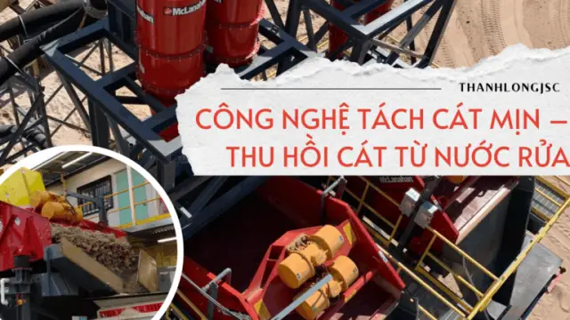
19Th9Công nghệ tách cát mịn – thu hồi cát từ nước rửa
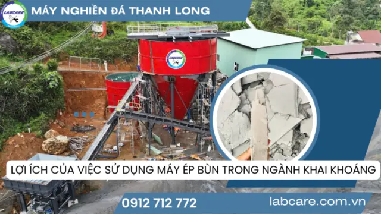
10Th6Lợi Ích Của Việc Sử Dụng Máy Ép Bùn Trong Ngành Khai Khoáng
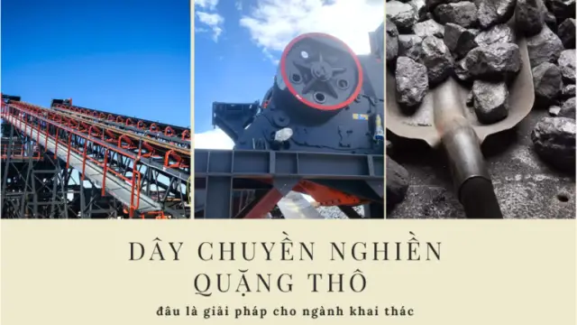
30Th5Dây chuyền nghiền quặng thô đâu là giải pháp cho ngành khai thác
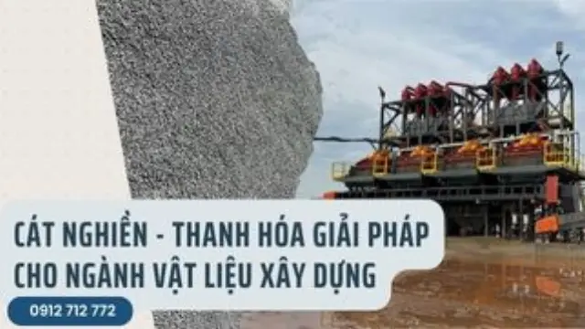
22Th5Cát Nghiền – Thanh Hóa Giải Pháp Cho Ngành Vật Liệu Xây Dựng
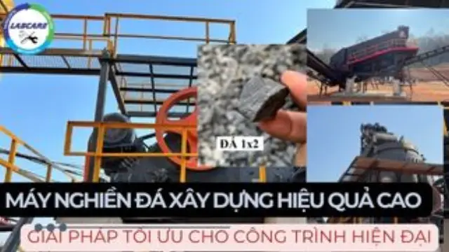
05Th5Máy nghiền đá xây dựng hiệu quả cao – Giải pháp tối ưu cho công trình hiện đại
17Th4
GIẢI PHÁP TOÀN DIỆN MÁY NGHIỀN ĐÁ CHÌA KHÓA TRAO TAY – CHO NHÀ ĐẦU TƯ KHAI THÁC ĐÁ
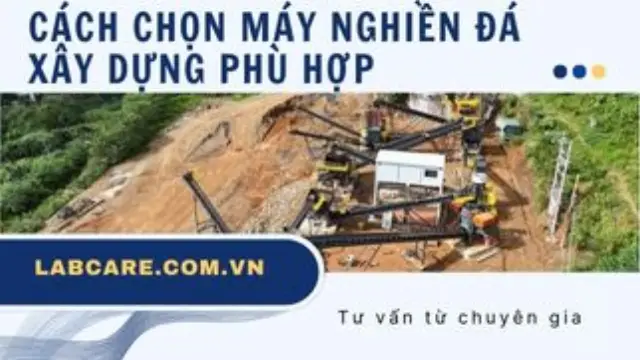
08Th4Cách chọn máy nghiền đá xây dựng phù hợp – Tư vấn từ chuyên gia
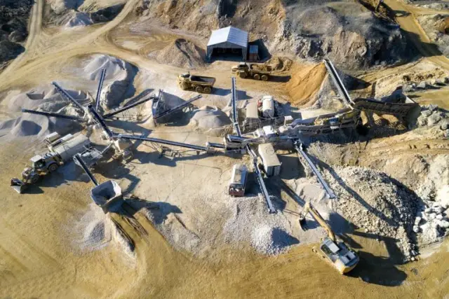
25Th3Máy Nghiền Đá Công Nghệ Mới Có Thật Sự Như Lời Đồn?
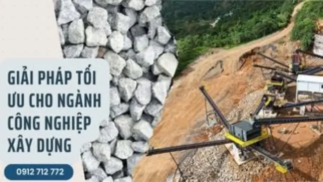
14Th3Giải pháp tối ưu cho ngành công nghiệp xây dựng
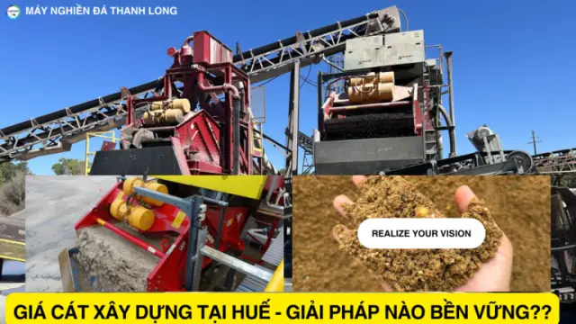
30Th12Giá cát xây dựng tại Huế – Giải pháp nào bền vững??
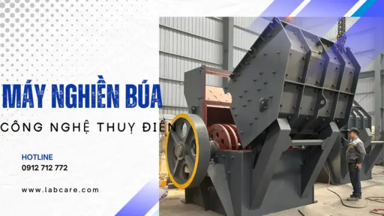
29Th11MÁY NGHIỀN BÚA TRONG DÂY CHUYỀN NGHIỀN ĐÁ XÂY DỰNG
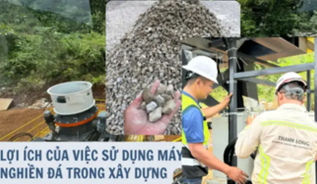
22Th10LỢI ÍCH CỦA VIỆC SỬ DỤNG MÁY NGHIỀN ĐÁ
 11Th10
11Th10Dây chuyền nghiền đá xây dựng tại Bà Rịa – Vũng Tàu
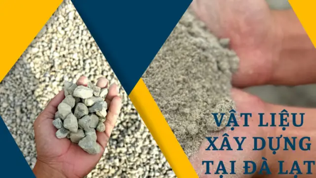
16Th8VẬT LIỆU XÂY DỰNG TẠI ĐÀ LẠT
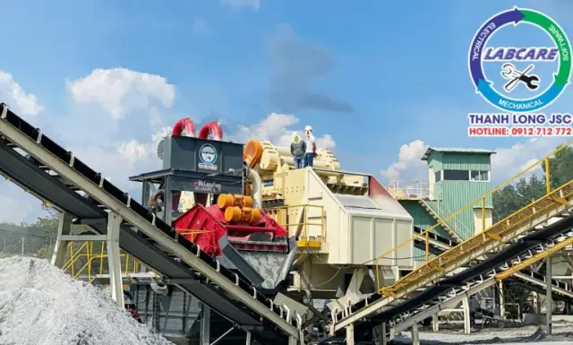
13Th8MÁY RỬA CÁT ĐỒI TẠI HẢI DƯƠNG
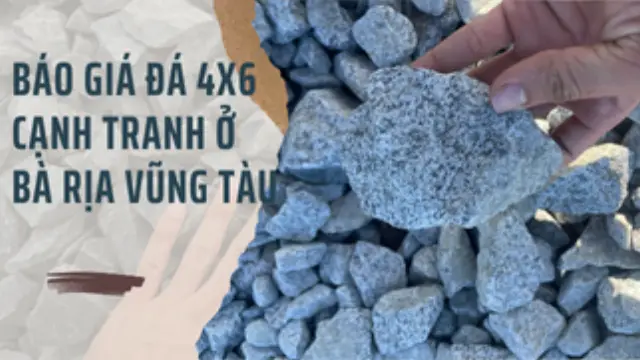
07Th8Báo giá đá 4×6 cạnh tranh ở Bà Rịa Vũng tàu
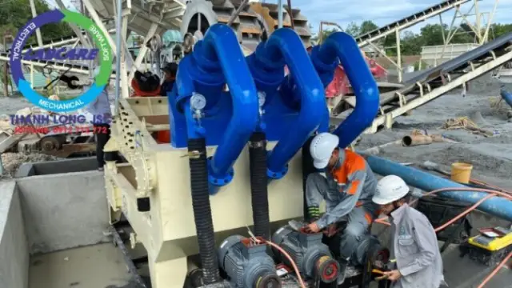
02Th8Máy tách cát mịn: Giải pháp tối ưu cho ngành xây dựng
26Th7
Dây chuyền nghiền đá tại Lâm Đồng: Tiềm năng và thách thức
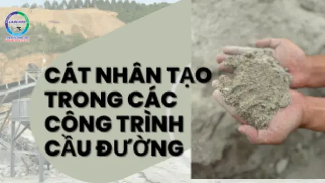
18Th7CÁT NHÂN TẠO TRONG CÁC CÔNG TRÌNH CẦU ĐƯỜNG
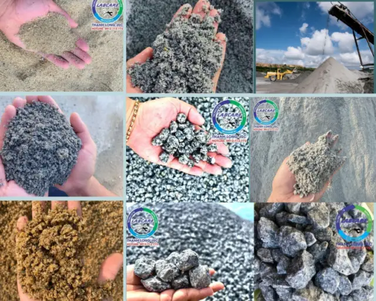
12Th7Giữa “cơn khát” VLXD và bài toán khai thác hiệu quả
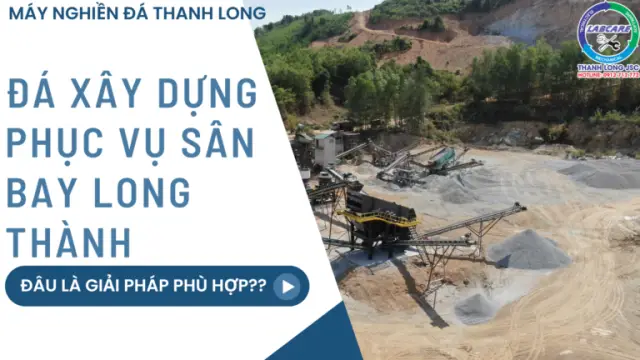
27Th6Đá xây dựng phục vụ sân bay Long Thành – ĐÂU LÀ GIẢI PHÁP PHÙ HỢP??
29Th5
Máy nghiền than đá – Trái tim của ngành công nghiệp than
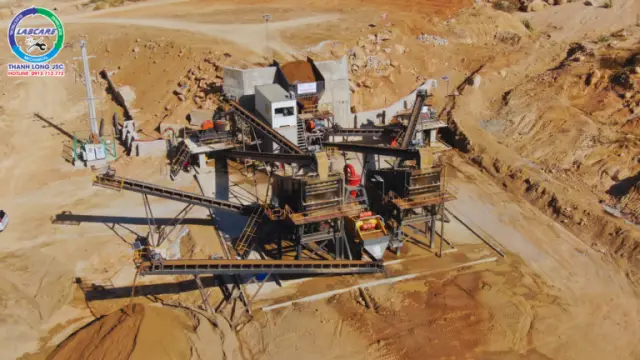
23Th5DÂY CHUYỀN MÁY RỬA CÁT
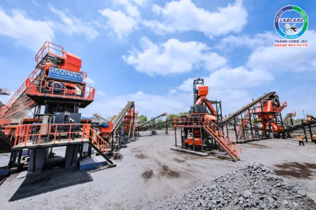
03Th5CÁT NHÂN TẠO GIẢI PHÁP THAY THẾ CÁT TRONG TƯƠNG LAI
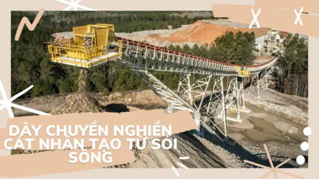
20Th3DÂY CHUYỀN NGHIỀN CÁT NHÂN TẠO TỪ SỎI SÔNG
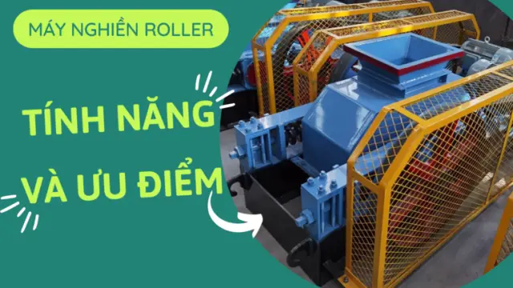
12Th3MÁY NGHIỀ ROLLER VÀ ƯU ĐIỂM CỦA MÁY NGHIỀN ROLLER
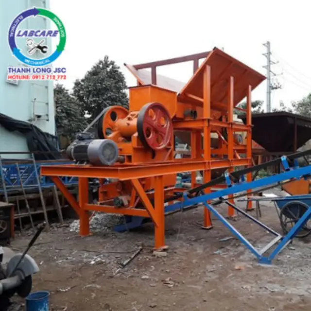
23Th2Giải pháp tối ưu cho nhu cầu nghiền đá nhỏ gọn
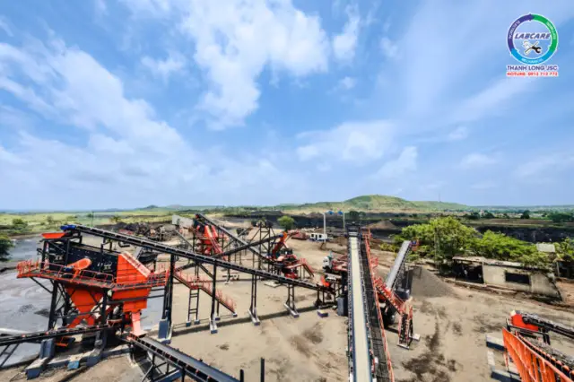
31Th1Máy nghiền đá cho cao tốc Khánh Hòa: Đẩy nhanh tiến độ thi công
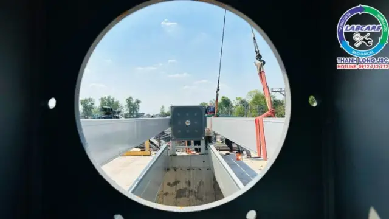
30Th1MÁY ÉP BÙN VÀ CÁC GIAI ĐOẠN CỦA MÁY ÉP BÙN
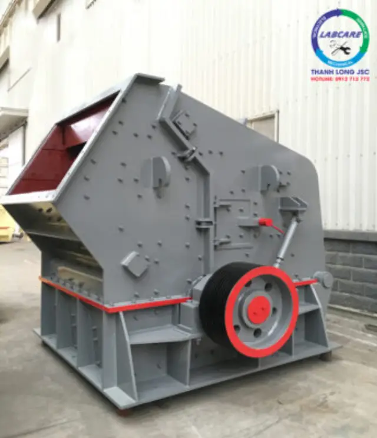
24Th1Máy nghiền phản kích
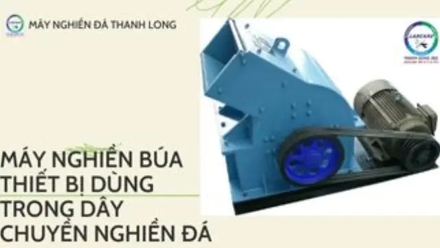
18Th1MÁY NGHIỀN BÚA THIẾT BỊ DÙNG TRONG DÂY CHUYỀN NGHIỀN ĐÁ
Không tìm thấy bài phù hợp. Thử từ khóa khác hoặc gọi 0912 712 772.
Đang hiển thị 36 bài mới nhất. Xem các bài cũ hơn
Cần tư vấn cấu hình trạm nghiền?
Gửi loại đá, công suất và sản phẩm đầu ra, kỹ sư Thanh Long sẽ đề xuất cấu hình và báo giá.